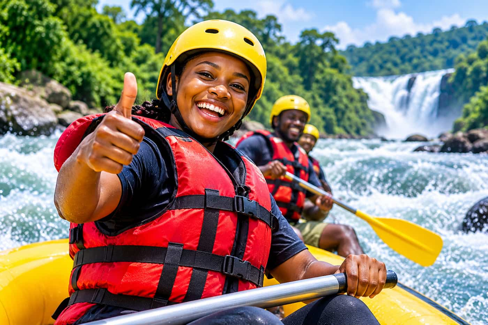

At Nile Rapids Adventures, we believe every journey should be filled with excitement, discovery, and unforgettable memories. Our mission is to provide safe, thrilling, and memorable white-water rafting experiences while showcasing the natural beauty of the River Nile.